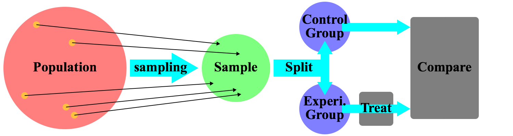

Experiments
Causation
Before we get into what an experiment is and why we perform them, we first have to clearly explain what we mean when we say "X causes Y". If I say "Smoking causes cancer", what do I mean? I do not mean that people who smoke are more likely to get cancer - that is correlation, not causation. The entire point of discussing causation is that us humans want to know how systems will react if we do something. The world's population correlates with the world's GDP-per-capita over time, but I very much doubt that if everyone had a dozen children, we'd all be super rich. So, instead, what I mean when I say "Smoking caues cancer" is more like: "If I cloned Earth and the Alice on Earth A doesn't smoke while the Alice on Earth B does, the Alice on Earth B is more likely to get cancer."Notice that in the example above, I duplicate Earth. This is to hold everything else constant. While IQ may cause some people to earn higher incomes, I don't expect a genius born in an isolated tribe in the Amazon to make as much money as an average college graduate in the U.S. This raises the question: "How can we hold every variable constant except the ones we are examing?"
Experimental Method
 At its most basic level, an experimentor does X (the treatment) to the one group of subjects (the experimental group) and not to the other group of subjects (the control group) and then compares the two afterwards. Any differences are infered to be caused by the treatment. However, the important question is how do we divide our sample into the experimental and control groups.Randomization
The naive answer is to give all your participants a survey asking them every question you can think of. Naturally, there are several problems with this method:- You might not think of every question.
- No one is willing to answer every question.
- Participants might lie for a variety of reasons.
This gives rise to the very pragmatic answer: randomize. If I start out with 1000 participants in my study to see if smoking causes cancer, I can just randomly split them into two groups of 500 each. The first group, the control group just goes about their normal day. The second group, the experimental group gets given cigarettes, which they then smoke. I do this for a few months and see which group gets more cancer.
Ignoring the ethical problems with this proposed study, we can see the usefulness of randomness. Given a large enough group, randomness basically ensure that any confounding variables are found in equal measure in both groups. For instance, maybe sun-light exposure causes cancer. Well, since we split the control from the experimental group randomly, we should have a very similar number of people who get to much exposure to the sun.
Placebo
In the 18th century, perkins tractors (two small, pointed metal rods) were used to cure various physical ailments. Some physicians claimed that the "active" metal alloys were crucial to their use in treatment. In 1799, John Haygarth investigated these claims and found that patients treated with wooden tractors did just as well as those treated with metal ones. This is one of the earliest examples of the Placebo effect, which essentially states that simply believing a treatment will work causes it to appear to work. If this were just the result of a single investigation, it would hardly be worth even a footnote in statistics, but the fact is that the significance of the Placebo effect has been demonstrated repeatedly.To counteract the Placebo effect, researchers blind subjects to the treatment they are receiving. For instance, if researchers are trying to determine the effect of a new drug on boosting mood, they will give the treatment group the drug, the control group sugar pills, and not tell either group which they are receiving.
Moreover, researchers have found another aspect to the Placebo effect: if the researchers know whether someone is in the control or treatment groups, this can often influence the results of a study. Possible reasons for this include, the researchers subconsciously influencing the participants or the researchers interpreting the experimental group's reactions more positively when no objective criteria exists for measurement.
Rigorous, modern studies now use double-blinding - a process by which neither the subjects nor the experimenters know whether anyone is in the experimental group or control group until after all the data has been collected.
For instance, researchers will collect 100 identical pill-bottles and fill half with sugar pills (these do nothing and are thus called placebos) and half with the new drug. They will place a bar-code corresponding to "treatment group" on the half with the drug and a bar-code corresponding to "control group" on the other half. Next, they will randomly distribute the pill-bottles to the participants. After all the data is collected, they will take the participant's pill-bottle and determine which group they were in.
- treatment
- the process the researchers want to determine the effects of
- experimental group
- the group receiving the treatment
- control group
- the group not receiving the treatment (often receives a placebo)
- Placebo effect
- the observation that expecting an outcome can cause one to perceive it
- blinding
- preventing the subjects from knowing which group they are in
- double-blinding
- preventing both the subjects and the researchers from knowing which group the subjects are in
- placebo
- an inert substitute meant to blind the subjects (and researchers)